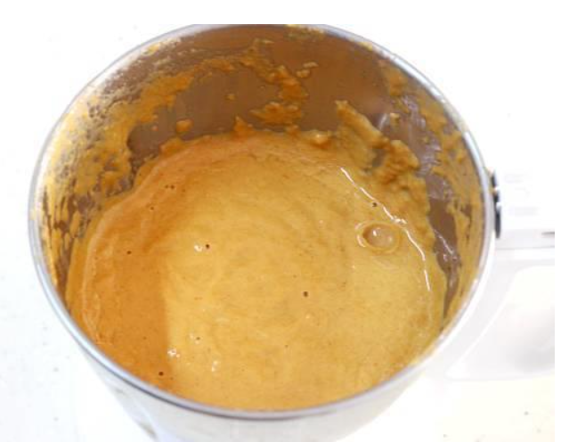

About Paneer Butter Masala
Paneer butter masala, also known as butter paneer is a rich & creamy curry made with paneer, spices, onions, tomatoes, cashews and butter. As the name denotes,
the curry is cooked in butter which imparts it's characteristic buttery flavor to the dish.
This paneer butter masala is a curry lover's dream!! Soft paneer dunked in a creamy,silky, super flavourful and delicious curry.
My easy recipe will help you make the best butter paneer that tastes better than anything from a restaurant. Make this once and I am sure you will never order it in a restaurant.
How to Make?
- If using store bought paneer, pour 2 cups of hot water to a bowl. Add paneer cubes & rest for about 15 to 20 mins. Later drain the water and set aside.
This will soften the paneer. I use this Homemade Paneer so I skip this step.
- Pour 1 tablespoon oil to a hot pan. Add 2 green cardamoms & 1 cup cubed onions.Saute them on a medium flame till they turn transparent or lightly pink in color. This
takes just 4 minutes.
- Next add the following:
- 1 1/2 cups finely chopped tomatoes
- 1 1/2 cups chopped onions
- 3/4 teaspoon salt.
Again saute for 2 to 3 minutes. Then cover the pan and cook till mushy.
- When the tomatoes and onions are completely soft cooked & mushy, add the
following:
- 3/4 to 1 teaspoon red chili powder (low heat variety)
- 3/4 to 1 teaspoon garam masala
- 1 teaspoon coriander powder (optional)
- 12 to 14 cashews
- 3/4 teaspoon sugar (optional, to balance the flavors)
- Saute this onion tomato masala on a low heat for 2 to 3 minutes. It should begin to smell good and aromatic. Turn off the stove.
- Cool this completely and add to a blender. Pour 1 cup water. Blend this mixture to a super smooth puree.
Tip: To speed up the process, I pour ice cold water to the blender jar first and then transfer the warm mixture.
- Blend to a very smooth & silky puree. If your blender is not powerful enough to make a fine puree, then strain it through a fine strainer to a bowl.

- Heat a pan on a low flame with 1 1/2 tbsp butter. When the butter melts, add all of the following spices. You can skip them if you don't have.
- 2 green cardamoms
- 1 bay leaf
- 1/2 inch cinnamon
- 3 cloves
- When the spices begin to sizzle, add 1 1/2 teaspoon ginger garlic paste. Saute for 1 minute or until you begin to smell it good. The raw smell should go away. Take care to
cook this on a low to medium heat. Do not burn the paste.
- Next pour onion tomato puree. I also added 1/4 teaspoon red chili powder for deeper color. This is completely optional. Ensure the stove flame is at low otherwise the
curry begins to splatter.
- Immediately pour 1/2 cup water & mix well to bring it to a gravy consistency. If it is too thick you can add little more water.
- Cover and cook on a medium flame until the gravy turns thick & flavorful.
- When the paneer butter masala gravy is ready, you will see traces of fats over the gravy. This is the color you may get. Open the lid and cook until the gravy turns thicker.
Test the taste and add more salt if needed
- Make sure the gravy reaches the desired consistency then add 200 to 250 grams paneer. Take 1 teaspoon kasuri methi in your palm and crush it between both your palms.
Then add it to the butter masala. Avoid adding paneer when the gravy is still
runny.

- Stir well. On a low flame cook covered just for 1 to 3 minutes. Cooking for longer can make the paneer harder. Add 2 to 3 tablespoons cream and stir. You should get this
thick creamy texture as you see in the picture below.

Serving
Transfer paneer butter masala to a serving bowl. Garnish with 1 tablespoon cream & 1 tablespoon finely chopped coriander leaves. Serve paneer butter masala with Jeera
rice, chapathi, Paratha, roti, Butter naan or even with plain basmati rice.